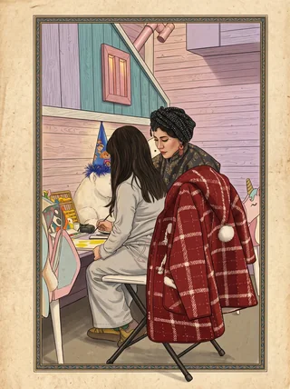
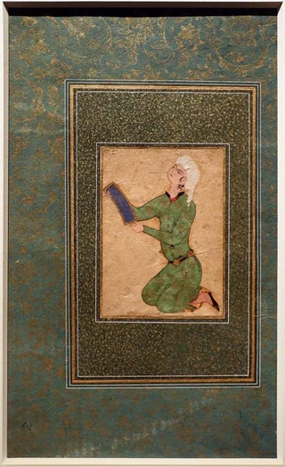
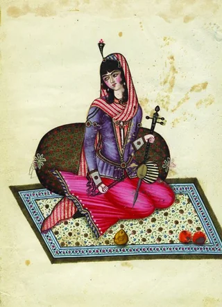
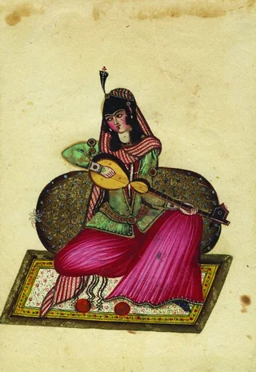

ایونتهای خانه سینادیا
خانه کودک
ایونت های هنری

۲۷ آبان · عصر چهارشنبه
نمایشنامه خوانی
خواندن نمایشنامه و همراه شدن با جهان شخصیتها، در جمع خانه.
ساعت
رزرو این برنامه
۲۷ آبان · عصر چهارشنبه
نقاشی بزرگسالان
فرصتی برای کنار هم نقاشی کردن و تجربهٔ رنگ و تصویر.
ساعت
رزرو این برنامهایونت های موسیقی
